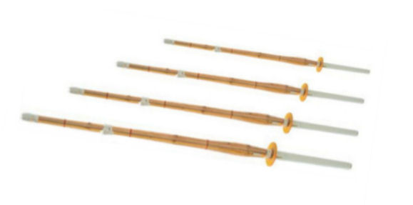
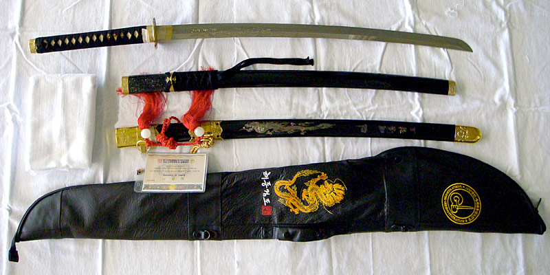

LOS TRES SABLES QUE SE OCUPAN PARA SU PRÁCTICA

Tenemos el uso de tres tipos de sable:
| El sable de madera, mok gum. Se utiliza para hacer formas y pasos de combate. |  |
| El sable de bambú, chukto. Se usa para el combate con contacto físico en clase y competencias a nivel nacional y mundial. |  |
| El sable de metal, jin gum. Es utilizado sólo por cintas negras mayores de 21 años. Con él se aprende a tener gran destreza en el corte, practicando con bambú maduro, pacas de paja, etcétera. |  |

Partes del Mok Gum (Sable de Madera)
- Gum Ko: Punta, se utiliza para apuñalar.
- Gum Nal: Filo, se utiliza para cortar.
- Gum Deung: Lomo, se utiliza para bloquear el sable contrario.
- Gum Mahggi: Guardamano, se utiliza para proteger la mano.
- Gum Jaroo: Mango, sirve para sostener el sable.
- Gum Nalghe: Vasco, se utiliza para la defensa.